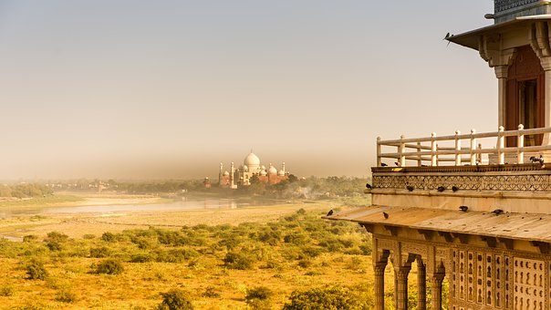

The Taj Mahal of Agra is one of the Seven Wonders of the World, for reasons more than just looking magnificent. It's the history of Taj Mahal that adds a soul to its magnificence: a soul that is filled with love, loss, remorse, and love again. Because if it was not for love, the world would have been robbed of a fine example upon which people base their relationships. An example of how deeply a man loved his wife, that even after she remained but a memory, he made sure that this memory would never fade away. This man was the Mughal Emperor Shah Jahan, who was head-over-heels in love with Mumtaz Mahal, his dear wife. She was a Muslim Persian princess (her name Arjumand Banu Begum before marriage) and he was the son of the Mughal Emperor Jehangir and grandson of Akbar the Great. It was at the age of 14 that he met Mumtaz and fell in love with her. Five years later in the year 1612, they got married.
Mumtaz Mahal, an inseparable companion of Shah Jahan, died in 1631, while giving birth to their 14th child. It was in the memory of his beloved wife that Shah Jahan built a magnificent monument as a tribute to her, which we today know as the "Taj Mahal". The construction of Taj Mahal started in the year 1631. Masons, stonecutters, inlayers, carvers, painters, calligraphers, dome-builders and other artisans were requisitioned from the whole of the empire and also from Central Asia and Iran, and it took approximately 22 years to build what we see today. An epitome of love, it made use of the services of 22,000 laborers and 1,000 elephants. The monument was built entirely out of white marble, which was brought in from all over India and central Asia. After an expenditure of approximately 32 million rupees, Taj Mahal was finally completed in the year 1653.
It was soon after the completion of Taj Mahal that Shah Jahan was deposed by his own son Aurangzeb and was put under house arrest at nearby Agra Fort. Shah Jahan, himself also, lies entombed in this mausoleum along with his wife. Moving further down the history, it was at the end of the 19th century that British Viceroy Lord Curzon ordered a sweeping restoration project, which was completed in 1908, as a measure to restore what was lost during the Indian rebellion of 1857: Taj being blemished by British soldiers and government officials who also deprived the monument of its immaculate beauty by chiseling out precious stones and lapis lazuli from its walls. Also, the British style lawns that we see today adding on to the beauty of Taj were remodeled around the same time. Despite prevailing controversies, past and present threats from Indo-Pak war and environmental pollution, this epitome of love continuous to shine and attract people from all over the world.
TAJ MAHAL
HISTORY
GALLERY


More Photos
Get in Touch to book a TRIP!
ADDRESS:3999 Maple Route,
Wonderland, ABS
PHONE NO.:0-123-234-4567
E-Mail:abc@mail.com
TimingsLunch: 11am - 2pm
Dinner: M-Th 5pm - 11pm, Fri-Sat:5pm - 1am
my map will go here